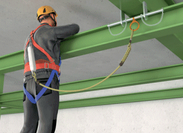

Bestandteile des Anseilschutzes ("Sicherheitsgeschirr")
Anseilschutz ist eine persönliche Schutzausrüstung gegen Absturz.
Der Anseilschutz besteht aus:
geeigneten Anschlageinrichtungen
Auffanggurt
und Verbindungsmittel wie
Seile und Bänder
Falldämpfer
Seilkürzer
oder
Höhensicherungsgerät